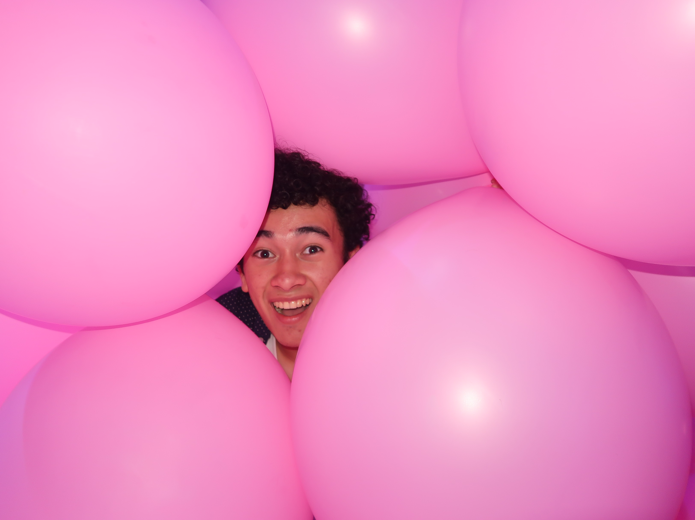
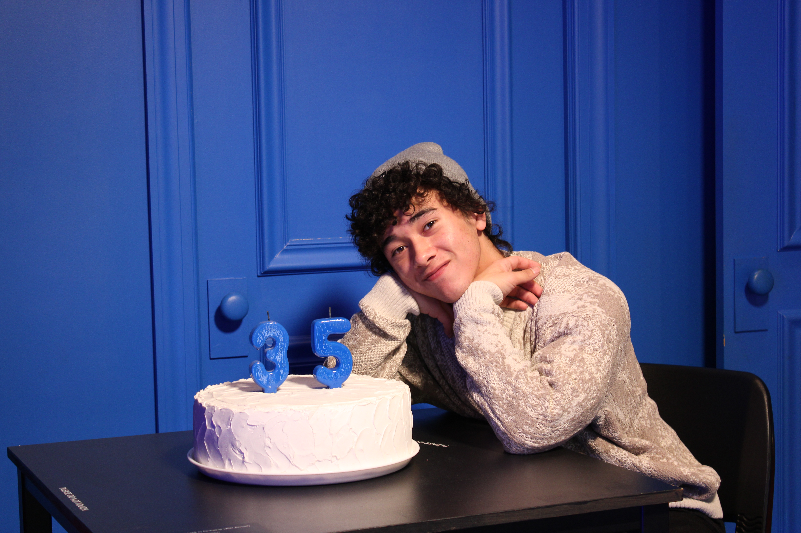
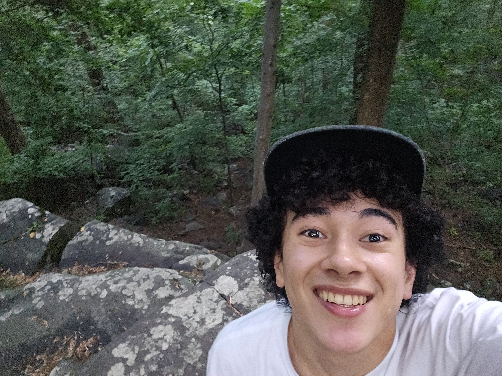

.jpg)
Hey hey! I'm Brandon.
"Creative marketing strategist and digital content creator leveraging visual storytelling, audience engagement analytics, and stage experience to connect brands with modern consumers.[...]
Currently pursuing my Bachelor of Science in Marketing at Rutgers Business School with plans to complete the Gateway Program for an MS in Digital Marketing. I bring a distinct perspective rooted in creative strategy, consumer insights, and cross-functional leadership.
Skills & Professional Toolkit
Marketing & Strategy
Content & Media Production
Leadership & Performance
Software & Technical Toolkit
Rutgers Campus Involvement
Featured Case Studies & Work
Digital Content Creation & Brand Channels
Directing, editing, and producing creative short-form and long-form video content across YouTube, Instagram, and TikTok. Utilizing trend analysis, narrative pacing, and audience engagement to craft compelling digital stories and brand experiences.
RU Pawning ("From Me to (R)U")
Co-authored a comprehensive business concept for an authentic, on-campus resale and pawn platform tailored for Rutgers students. Formulated customer value propositions, financial projections, and launch strategy for a modern campus economy solution.
UNICEF Chapter Operational Study (Team 2 AM)
Conducted primary research and managerial analysis of the Hillsborough High School UNICEF chapter. Diagnosed member retention and organizational output challenges, delivering actionable recommendations to improve execution and engagement.
Omnichannel Performance Apparel Launch (Forage)
Developed an integrated omnichannel marketing strategy and creative brief for a performance apparel brand product launch. Designed digital product experiences aligned with modern consumer behavior and channel performance insights.
Life Outside Marketing



-
Theatre & Stage PerformanceActive in ensemble performing with the Livingston Theatre Company (LTC) and volunteer community theatre at Somerset Valley Players. Bringing stage presence, expression, and storytelling energy into every performance.
-
Dance Captain & LeadershipInstructed and managed a 27-member competitive dance team across diverse skill levels, achieving 2nd place in regional competition through structured rehearsals and choreography.
-
Culinary ArtsPassionate home baker and cook, experimenting with new recipes and culinary presentation as a creative outlet.
-
Continuous Learning: Piano & ASLDedicated to expanding personal creative skills through learning piano and studying American Sign Language (ASL) in my free time.